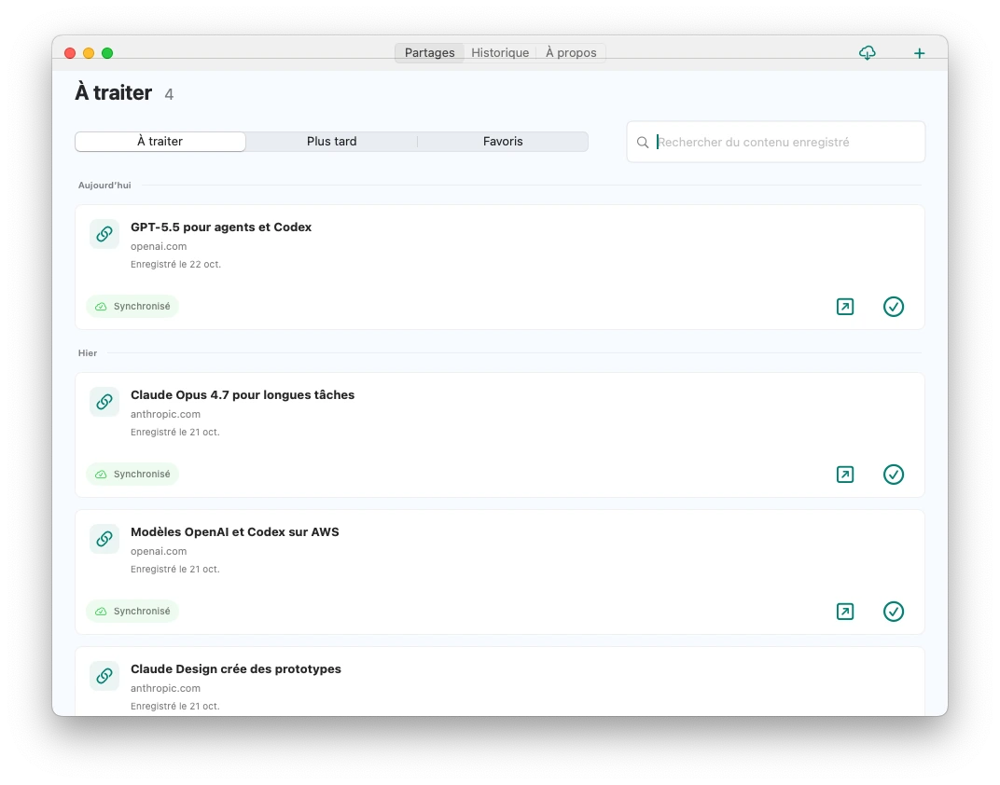
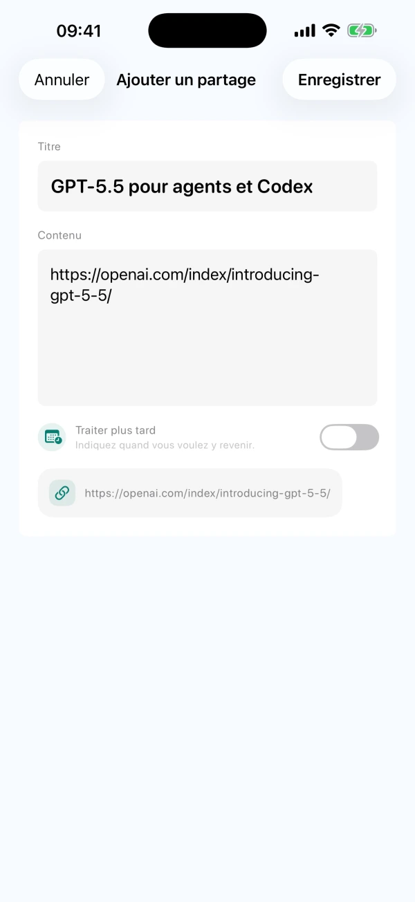
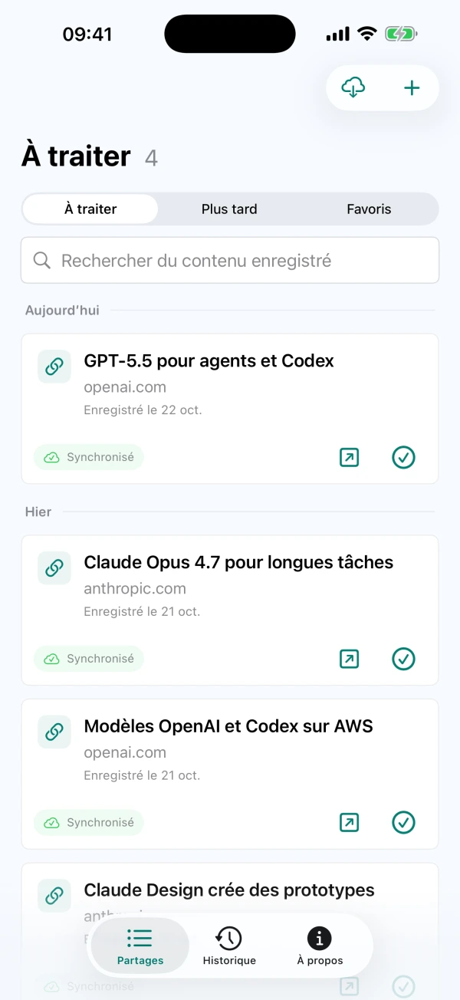

Partager ou noter soi-même
Enregistrez textes, liens ou images compatibles via le menu Partager d’autres apps. Vous pouvez aussi saisir une idée dans CarryOver.
Enregistrez depuis le menu Partager du téléphone. Ouvrez la source sur Mac quand vous êtes prêt.
Retrouvez CarryOver pour iPhone, iPad et Mac sur l’App Store.


iPhoneiPadMac
Envoyez liens, publications et idées à CarryOver
Les éléments à traiter restent dans la liste

Ouvrez la source, puis marquez comme terminé
Enregistrez textes, liens ou images compatibles via le menu Partager d’autres apps. Vous pouvez aussi saisir une idée dans CarryOver.
Les éléments non terminés restent dans votre liste, quelle que soit leur ancienneté. Marquez-les comme terminés après les avoir traités.
Dans la fenêtre principale du Mac, recherchez titres, textes et URL sources, dans la liste à traiter comme dans l’historique.
Les éléments terminés vont dans l’historique. Restaurez-les dans la liste à traiter pour reprendre le travail.
Choisissez une date et une heure et autorisez les notifications système. Touchez le rappel pour ouvrir le contenu enregistré.
iCloud synchronise iPhone, iPad et Mac connectés au même compte Apple. Le réseau et l’état d’iCloud peuvent retarder la synchronisation.
La version actuelle n’impose aucune limite quotidienne d’enregistrements et ne nécessite pas de mise à niveau Pro séparée. Consultez l’App Store pour la disponibilité et le prix dans votre région. Lire l'aide